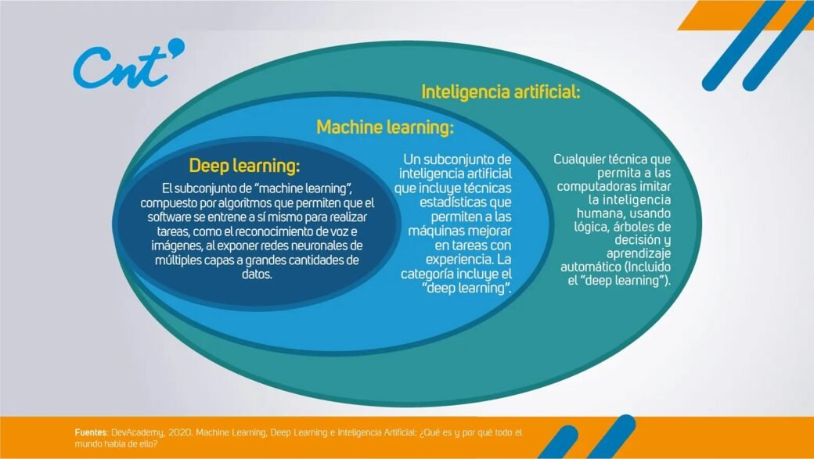
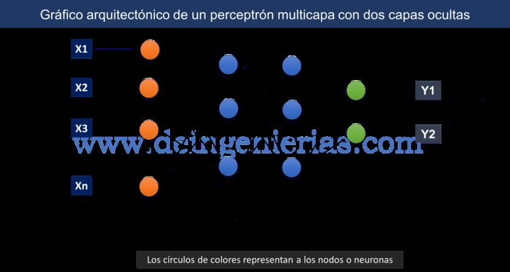
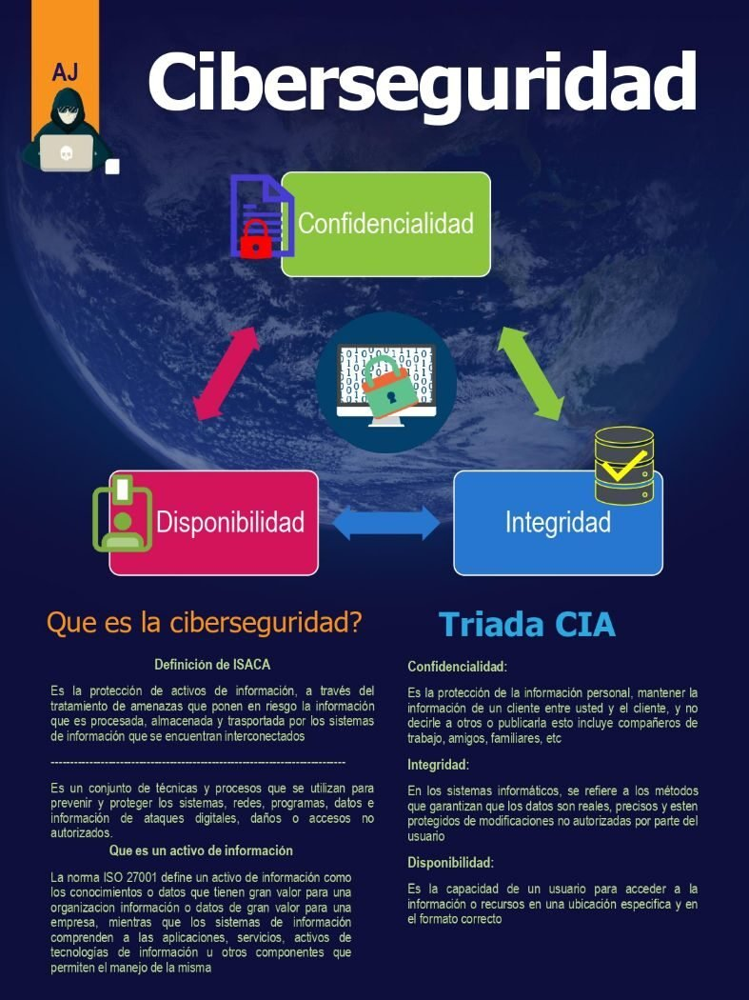

Rama de la informática que diseña sistemas capaces de realizar tareas que requieren inteligencia humana: comprender lenguaje natural, reconocer patrones, aprender de la experiencia, tomar decisiones y resolver problemas complejos.
Según funcionalidad:
| Tipo | Descripción | Ejemplo |
|---|---|---|
| IA Débil (ANI) | Diseñada para una tarea específica. | Siri, Alexa, reconocimiento facial |
| IA Fuerte (AGI) | Teóricamente capaz de cualquier tarea cognitiva humana. | No existe actualmente |
| Superinteligencia (ASI) | Superaría la inteligencia humana en todos los aspectos. | Concepto futurista |
Según capacidad y cognición:
| Nivel | Descripción | Ejemplo |
|---|---|---|
| Máquinas reactivas | Solo reaccionan a entradas, sin memoria ni aprendizaje. | Deep Blue |
| Memoria limitada | Almacenan información temporal para decidir. | Vehículos autónomos |
| Teoría de la mente | Comprenden emociones y estados mentales. | Asistentes avanzados |
| IA Autoconsciente | Conscientes de sí mismas (teórico). | Ciencia ficción |
El Machine Learning es una rama de la Inteligencia Artificial que permite a los sistemas aprender a partir de datos sin ser programados explícitamente regla por regla. En lugar de indicar al sistema todas las instrucciones posibles, se le proporcionan muchos datos de entrada y el sistema detecta patrones para construir un modelo capaz de clasificar, predecir o tomar decisiones.
En términos sencillos: los algoritmos de Machine Learning usan multitud de datos como entrada y generan como salida modelos o patrones que luego se aplican a situaciones nuevas.
| Tipo | Cómo aprende | Ejemplo |
|---|---|---|
| Aprendizaje supervisado | Se entrena con datos etiquetados. El sistema conoce cuál es la respuesta correcta durante el entrenamiento. | Clasificación de correos spam / no spam. |
| Aprendizaje no supervisado | Trabaja con datos sin etiquetar y busca agrupaciones o patrones ocultos. | Segmentación de clientes según hábitos de compra. |
| Aprendizaje semisupervisado | Combina un pequeño conjunto de datos etiquetados con muchos sin etiquetar. Útil cuando etiquetar es caro o lento. | Clasificación de imágenes médicas con pocas muestras diagnosticadas. |
| Aprendizaje por refuerzo | Aprende por ensayo y error, recibiendo recompensas o penalizaciones. | Robots, videojuegos, control autónomo. |
Las redes neuronales artificiales son modelos matemáticos inspirados en el funcionamiento del cerebro humano. Están formadas por muchas neuronas artificiales interconectadas, organizadas en capas de entrada, capas ocultas y capa de salida. Cada neurona recibe información, la procesa y la transmite a la siguiente capa.
El Deep Learning es una rama del Machine Learning que utiliza redes neuronales con muchas capas. Gracias a ello puede reconocer patrones muy complejos, como imágenes, voz o lenguaje natural.

| Tipo de ML | Cómo aprende | Ejemplo |
|---|---|---|
| Supervisado | De datos etiquetados (cada entrada tiene su respuesta correcta). | Clasificar imágenes de gatos y perros. |
| No supervisado | Sin etiquetas: busca patrones, grupos o anomalías por sí solo. | Agrupar clientes por comportamiento de compra. |
| Semisupervisado | Combina datos etiquetados y no etiquetados. | Diagnóstico por imagen con pocas radiografías etiquetadas. |
| Por refuerzo | Prueba y error con recompensas y castigos. | Robot aprendiendo a caminar, algoritmo jugando al ajedrez. |
Reconocimiento facial, conducción autónoma, procesamiento de voz, generación de contenidos.

Traducción automática, asistentes virtuales (Siri, Alexa), ChatGPT, análisis de sentimientos.
ChatGPT, DALL-E, Stable Diffusion, GitHub Copilot. Retos: deepfakes, derechos de autor, sesgos.
Un sesgo ocurre cuando un modelo produce resultados que favorecen o discriminan ciertos casos. Causas: datos desbalanceados, variables sensibles, decisiones de diseño.
| Sector | Aplicación | Ejemplo |
|---|---|---|
| Salud y Medicina | Diagnóstico, análisis de imágenes médicas, desarrollo de tratamientos. | Detección de cáncer con IA, prótesis inteligentes. |
| Transporte | Optimización de rutas, conducción autónoma, análisis de tráfico en tiempo real. | Vehículos autónomos (Tesla), Google Maps. |
| Comercio electrónico | Personalización de experiencias de compra, predicción de tendencias. | Recomendaciones en Amazon, análisis de consumo. |
| Marketing y publicidad | Análisis de comportamiento del consumidor, segmentación de mercados. | Publicidad dirigida en redes sociales. |
| Finanzas | Detección de fraudes, gestión de riesgos, servicios bancarios personalizados. | Monitoreo de transacciones, análisis crediticio. |
| Educación | Personalización del aprendizaje, análisis de desempeño estudiantil. | Plataformas adaptativas como Duolingo. |
| Agricultura | Monitoreo de cultivos, gestión de recursos, predicción de plagas. | Agricultura de precisión, riego inteligente. |
| Entretenimiento | Personalización de contenido, creación de medios, interacción con el usuario. | Netflix, Spotify, generación de música con IA. |
| Industria y manufactura | Mantenimiento predictivo, optimización de procesos, control de calidad. | Sistemas de control industrial automatizados. |
| Seguridad y defensa | Análisis de riesgos, monitoreo de amenazas, ciberseguridad. | Reconocimiento facial en vigilancia. |
| Energía y medio ambiente | Optimización del consumo energético, predicción de demanda, sostenibilidad. | Redes eléctricas inteligentes, gestión de renovables. |
Grandes volúmenes de datos tan masivos y complejos que las herramientas tradicionales no son suficientes para manejarlos. Su objetivo es identificar patrones, tendencias y relaciones para la toma de decisiones.
| V | Descripción |
|---|---|
| Volumen | Cantidad masiva de datos (terabytes, petabytes). |
| Velocidad | Rapidez de generación, procesamiento y análisis. |
| Variedad | Diversidad: estructurados (tablas), semiestructurados (JSON), no estructurados (imágenes). |
| Veracidad | Calidad y fiabilidad de los datos. |
| Valor | Utilidad para generar información significativa. |
| Variabilidad | Inconsistencia de los datos a lo largo del tiempo: cambios en el significado, en los formatos o fluctuaciones en su generación. |
| Visualización | Representación comprensible (gráficos, dashboards). |
| Fuente | Descripción |
|---|---|
| Redes sociales | Publicaciones, interacciones (Facebook, Twitter, TikTok). |
| Sensores e IoT | Dispositivos conectados (automóviles, fábricas, hogares). |
| Datos transaccionales | Ventas, compras, pagos, facturas. |
| Logs | Registros de sitios web, servidores y aplicaciones. |
| Contenido multimedia | Vídeos, imágenes, audios. |
| Sector | Aplicación |
|---|---|
| Salud | Diagnóstico predictivo, análisis genómico, gestión hospitalaria. |
| Marketing | Publicidad dirigida, análisis de comportamiento del consumidor. |
| Finanzas | Detección de fraudes, modelos de riesgo crediticio. |
| Transporte | Optimización de rutas, predicción de averías, tráfico inteligente. |
| Administración pública | Políticas basadas en datos, gestión de emergencias. |
| Industria | Mantenimiento predictivo, optimización de producción. |
Sistema que almacena datos en diferentes ubicaciones físicas (nodos) interconectadas. Cada nodo funciona de forma autónoma y se coordinan a través de internet o redes.
Datos en tablas (filas y columnas). Relaciones con claves primarias/foráneas. Lenguaje SQL.
Datos no estructurados o semiestructurados. Arquitectura distribuida por naturaleza.
| Característica | BDD (Distribuida) | Centralizada |
|---|---|---|
| Ubicación | Datos en múltiples nodos o servidores distribuidos. | Un único servidor o ubicación física. |
| Escalabilidad | Alta (horizontal): se añaden nodos para más volumen. | Limitada: depende del servidor central. |
| Rendimiento | Mayor gracias al procesamiento paralelo. | Menor con alta carga de usuarios. |
| Disponibilidad | Alta: si falla un nodo, los demás siguen. | Baja: fallo del servidor = sistema inaccesible. |
| Latencia | Reducida: los nodos locales aceleran el acceso. | Alta: conexiones remotas aumentan los tiempos. |
| Complejidad de gestión | Alta: coordinación, replicación, sincronización. | Baja: más fácil de administrar al estar centralizada. |
| Costos iniciales | Mayores: infraestructura distribuida. | Menores: infraestructura más simple. |
| Coordinación | Requiere protocolos avanzados para coherencia. | No requiere coordinación entre servidores. |
| Ejemplos de uso | Redes sociales, comercio electrónico global, banca. | Sistemas locales, oficinas, pymes. |

Práctica que protege información, sistemas y equipos frente a ataques. Se basa en tres pilares:
| Tipo | Descripción | Ejemplo |
|---|---|---|
| Virus | Se adhieren a archivos y propagan al ejecutarse. | ILOVEYOU |
| Gusanos | Se replican automáticamente por redes. | Conficker |
| Ransomware | Bloquea acceso exigiendo rescate. | WannaCry |
| Troyanos | Se ocultan en programas legítimos. | Emotet |
| Spyware | Recopila información sin conocimiento del usuario. | Pegasus |
| CryptoJacking | Usa dispositivos para minar criptomonedas. | CoinHive |
| Tipo | Descripción |
|---|---|
| Phishing | Correos/mensajes fraudulentos para robar datos. |
| Spear Phishing | Phishing dirigido a individuos clave. |
| Smishing / Vishing | Por SMS / por llamada telefónica. |
| Baiting | Señuelos (USB infectados) para comprometer sistemas. |
| Tipo | Descripción | Ejemplo |
|---|---|---|
| Fuerza bruta | Probar todas las combinaciones posibles de contraseñas o claves. | Diccionario "rockyou.txt", botnets distribuidas. |
| Inyección SQL | Comandos maliciosos en formularios web para extraer datos. | ' OR '1'='1 en un buscador para leer toda la BD. |
| XSS (Scripting entre sitios) | Scripts maliciosos insertados en páginas; roban datos de quienes los visitan. | Comentario en red social que roba cookies de sesión. |
| RCE (Ejecución remota de código) | Envío de un archivo al servidor que contiene instrucciones dañinas. | Subida de una "foto de perfil" que es en realidad un ejecutable. |
| DoS / DDoS | Saturar un servidor con solicitudes masivas (desde una o muchas fuentes). | Botnet enviando millones de peticiones simultáneas. |
| Man-in-the-Middle (MitM) | Interceptar comunicaciones entre dos partes para espiar o robar datos. | Red Wi-Fi pública no segura que captura contraseñas. |
| Man-in-the-Browser (MitB) | Malware en el navegador que manipula transacciones o datos en tránsito. | Troyano bancario que altera los datos de una transferencia antes de enviarlos. |
| Cadena de suministro — amenazas internas | Empleados o socios con acceso privilegiado filtran o explotan información. | Empleado de un proveedor filtra datos de un producto antes de su lanzamiento. |
| Cadena de suministro — manipulación de software | Código malicioso inyectado en actualizaciones distribuidas por proveedores. | Actualización legítima alterada en el servidor del proveedor incluye un virus. |
La ciberseguridad se ha convertido en un componente esencial en el entorno digital por cuatro razones convergentes:
Ataques como phishing, ransomware y robo de identidad crecen en frecuencia y sofisticación cada año.
Datos personales, secretos comerciales y registros médicos deben protegerse para evitar pérdidas financieras y daños a la reputación.
La transformación digital aumenta la exposición: proteger dispositivos, redes y datos es imprescindible.
Regulaciones como el RGPD (UE) obligan a garantizar la seguridad de los datos; su incumplimiento acarrea sanciones.
| Práctica | Descripción |
|---|---|
| Contraseñas seguras | ≥12 caracteres, mayúsculas, minúsculas, números, símbolos. Gestores (LastPass, Bitwarden). |
| Actualización de software | Corregir vulnerabilidades. Activar actualizaciones automáticas. |
| Backups (3-2-1) | 3 copias, 2 medios diferentes, 1 offline. |
| VPN y segmentación de red | Conexiones seguras y redes internas separadas. |
| Formación | Detectar phishing, cultura de seguridad. |
| Certificados digitales | SSL/TLS, firma electrónica. |
| Amenaza | Descripción |
|---|---|
| Deepfakes | Vídeos/audios falsos creados con IA. |
| Ataques a IoT | Explotar dispositivos conectados inseguros. |
| Ransomware dirigido | Ataques a infraestructuras críticas (hospitales). |
| Ataques a IA | Manipular algoritmos para resultados erróneos. |
| Ciberataques cuánticos | Computación cuántica para romper cifrado actual. |
6 preguntas tipo PAU. Pulsa la opción que consideres correcta y se mostrará la respuesta y la explicación.
1. ¿Qué rama de la IA permite a un sistema mejorar a partir de datos sin programación explícita de cada caso?
2. ¿Cuál de las siguientes no figura como una de las 7 V del Big Data?
3. Una base de datos distribuida (BDD) se caracteriza por:
4. En el triángulo CIA, la integridad garantiza que:
5. La autenticación multifactor (MFA) combina típicamente:
6. Un ataque de tipo phishing busca:
Un sistema de mantenimiento predictivo permite conectar IA, Big Data, bases de datos distribuidas y ciberseguridad en un único ejemplo tecnológico.
| Concepto | Aplicación en el caso | Riesgo técnico |
|---|---|---|
| IA | Predicción de averías | Sesgo, datos pobres o sobreajuste |
| Big Data | Análisis de grandes históricos | Ruido, velocidad y veracidad |
| BDD | Datos repartidos entre sedes | Consistencia, latencia y disponibilidad |
| Ciberseguridad | Protección del sistema | Phishing, ransomware o fuga de datos |
| Concepto | Respuesta técnica breve | Ejemplo |
|---|---|---|
| IA | Sistema capaz de realizar tareas que requieren percepción, aprendizaje, razonamiento o decisión. | Clasificación de defectos en una línea de producción. |
| Entrenamiento | Proceso en el que el modelo ajusta parámetros a partir de datos. | Aprender patrones de avería con históricos. |
| Inferencia | Uso del modelo ya entrenado para obtener una salida ante datos nuevos. | Predecir si un motor fallará. |
| Big Data | Tratamiento de datos por volumen, velocidad, variedad y valor que exceden herramientas simples. | Millones de registros de sensores. |
| Ciberseguridad | Conjunto de medidas para proteger confidencialidad, integridad y disponibilidad. | Copias, autenticación, cifrado y actualización. |
La mejora final conecta los conceptos informáticos en una cadena técnica única: captación de datos, almacenamiento, análisis, decisión y protección.
| Capa | Función | Riesgo principal | Medida de control |
|---|---|---|---|
| Captación | Sensores, formularios, registros o dispositivos. | Dato incompleto o sesgado. | Validación y trazabilidad. |
| Almacenamiento | Bases de datos locales o distribuidas. | Pérdida, duplicidad o acceso indebido. | Copias, permisos y cifrado. |
| Análisis | Big Data, estadística, aprendizaje automático. | Conclusiones erróneas. | Calidad del dato y revisión humana. |
| Decisión | Recomendación, predicción o control. | Automatizar una mala decisión. | Supervisión, métricas y límites. |
| Seguridad | Protección del sistema completo. | Phishing, ransomware, fuga de datos. | Autenticación, copias y actualización. |